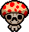
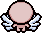
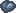
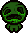
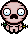
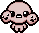
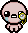
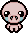
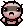
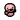

Transformations
Transformations alter Isaac's appearance and grant him special abilities.
A transformation occurs when obtaining at least three different items from a particular set of items. These collectibles always share a particular theme that corresponds with the transformation.
Contents
Transformation Sets
The following are the known transformations:
| ID # | Name | Appearance | Description |
|---|---|---|---|
| 0 | Guppy |

|
🕱 Grants flight and spawns a Blue Fly each time a tear hits an enemy. DLC: Grants flight and adds a 66% chance to spawn a Blue Fly when a tear hits an enemy. |
| 1 | Beelzebub |
Grants flight. Converts small enemy flies into Blue Flies. DLC: Larger flies become friendly and follow Isaac between rooms. |
|
| 2 | Fun Guy |  | DLC: +1 Red Heart Container. |
| 3 | Seraphim |  | DLC: Grants flight and gives +3  Soul Hearts. |
| 4 | Bob |  | DLC: Isaac leaves a trail of green poisonous creep as he walks that deals 6 damage per second. |
| 5 | Spun |  | DLC: Gives +2 damage and +0.15 speed, and spawns a random pill upon transformation. |
| 6 | Yes Mother? |
DLC: Isaac gains a stationary knife that trails directly behind him. It synergizes like |
|
| 7 | Conjoined |  | DLC: Adds two tumors that fire diagonally from Isaac's head. -0.3 Damage, -0.3 Tears. |
| 8 | Leviathan | DLC: Grants flight and gives +2 Black Hearts. | |
| 9 | Oh Crap | DLC: Whenever a pile of poop is destroyed, restores half of a red heart. | |
| 10 | Bookworm |  | DLC: Roughly 25% of the time, Isaac shoots an extra tear, like 20/20. |
| 11 | Adult | DLC: +1 Red Heart Container. | |
| 12 | Spider Baby |  | DLC: Spawns a spider familiar that applies random status effects to enemies it comes in contact with. |
| 13 | Stompy |

|
DLC: Taking damage has a chance to spawn rock waves. Isaac can break obstacles by walking over them. |
| n/a | Super Bum |  | DLC: Replaces  Bum Friend, Dark Bum, and Key Bum with Super Bum. This bum collects any of the other beggars' pickups, and offers twice the rewards. |
Requirements
To achieve a transformation, Isaac must obtain at least three different items from a specific set related to the transformation. Each set has its unique theme and effects.
Notes
- Transformations generally enhance Isaac's abilities or change his appearance.
- Some transformations are restricted to specific versions of the game, such as Rebirth, Afterbirth †, or Repentance.
Trivia
- Transformations provide Isaac with different visual and gameplay changes.
- Some transformations require specific combinations of items, making them challenging to obtain.